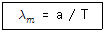
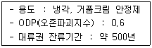
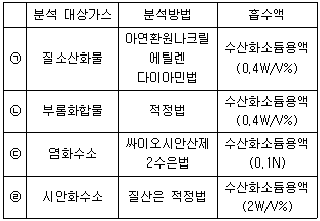
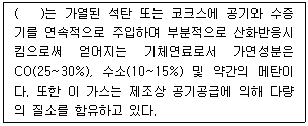
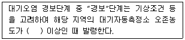

대기환경산업기사 (2017-05-07 기출문제)
1과목: 대기오염개론
1. 다음 중 불화수소에 대한 저항성이 가장 큰 식물은?
- 옥수수
- 글라디올러스
- 메밀
- 목화
(정답률: 62%)

2. 분자량이 M인 대기오염 물질의 농도가 표준상태(0℃, 1기압)에서 448ppm으로 측정되었다. 표준상태에서 mg/m3로 환산하면?
- 1/20M
- M/20
- 20M
- 20/M
(정답률: 89%)
3. London형 스모그 사건과 비교한 Los Angeles형 스모그 사건에 관한 설명으로 옳은 것은?
- 주오염물질은 SO2, smoke, H2SO4, 미스트 등이다.
- 주오염원은 공장, 가정난방이다.
- 침강성 역전이다.
- 주로 아침, 저녁에 발생하고, 환원반응이다.
(정답률: 88%)
4. 다음 중 지표부근 건조대기의 일반적인 부피농도를 크기순으로 옳게 배열한 것은?
- Ne ＞ CO2 ＞ CO
- CO2 ＞ CO ＞ Ne
- Ne ＞ CO ＞ CO2
- CO2 ＞ Ne ＞ CO
(정답률: 66%)
5. 지구대기 중의 오존총량을 표준상태(0℃, 1기압)에서 두께로 환산했을 때, 100Dobson으로 정하는 수치로 옳은 것은?
- 1cm
- 0.1cm
- 0.01mm
- 0.001mm
(정답률: 80%)
6. 상대습도가 70%일 때 분진의 농도가 0.04mg/m3인 지역이 있다. 이 지역의(km)는? (단, 상수 A＝1.2이다.)
- 4
- 16
- 30
- 42
(정답률: 71%)
7. 다음 중 대기 내에서 금속의 부식속도가 일반적으로 빠른 것부터 순서대로 연결된 것은?
- 철 ＞ 아연 ＞ 구리 ＞ 알루미늄
- 구리 ＞ 아연 ＞ 철 ＞ 알루미늄
- 알루미늄 ＞ 철 ＞ 아연 ＞ 구리
- 철 ＞ 알루미늄 ＞ 아연 ＞ 구리
(정답률: 85%)
8. 최대 에너지가 복사될 때 이용되는 파장(λm : μm)과 흑체의 표면온도 (T：절대온도단위)와의 관계를 나타내는 복사이론에 관한 법칙은? (단, 비례상수 a=0.2898cm·K)

- 스테판-볼츠만의 법칙
- 비인의 변위법칙
- 플랑크의 법칙
- 알베도의 법칙
(정답률: 81%)
9. 대기권의 구조에 관한 설명으로 가장 거리가 먼 것은?
- 대기의 수직온도 분포에 따라 대류권, 성층권, 중간권, 열권으로 구분할 수 있다.
- 대류권 기상요소의 수평분포는 위도, 해륙분포 등에 의해 다르지만 연직방향에 따른 변화는 더욱 크다.
- 대류권의 높이는 통상적으로 여름철에 낮고 겨울철에 높으며, 고위도 지방이 저위도 지방에 비해 높다.
- 대류권의 하부 1~2km까지를 대기경계층이라고 하며, 지표면의 영향을 직접 받아서 기상요소의 일변화가 일어나는 층이다.
(정답률: 85%)
10. Chloro Fluoro Carbon-11(CFC-11)의 화학식으로 옳은 것은?
- CCl3F
- CCl2F2
- CCl2FCClF2
- CH3CCl3
(정답률: 65%)
11. 보통 가을로부터 몸에 걸쳐 날씨가 좋고, 바람이 약하며, 습도가 적을 때 자정 이후 아침까지 잘 발생하고, 낮이 되면 일사로 인해 지면이 가열되면 곧 소멸되는 역전의 형태는?
- Racative inversion
- Subsidence inversion
- Lofting inversion
- Coning inversion
(정답률: 74%)
12. 대기가 매우 불안정할 때 주로 나타나며, 막은 날 오후에 주로 발생하기 쉽고 또한 풍속이 매우 강하여 혼합이 크게 일어날 때 발생하게 되며, 굴뚝이 낮은 경우에는 풍하쪽 지상에 강한 오염이 생기며, 저ㆍ고기압에 상관없이 발생하는 연기의 형태는?
- 원추형
- 환상형
- 부채형
- 구속형
(정답률: 82%)
13. 분산모델에 관한 설명으로 가장 거리가 먼 것은?
- 미래의 대기질을 예측할 수 있다.
- 2차 오염원의 확인이 가능하다.
- 지형 및 오염원의 조업조건에 영향을 받지 않는다.
- 새로운 오염원이 지역 내에 생길 때, 매번 재평가를 해야 한다.
(정답률: 84%)
14. 다음 중 주로 O3에 의한 피해인 것은?
- 고무의 노화
- 석회석의 손상
- 금속의 부식
- 유리 제조품의 부식
(정답률: 87%)
15. 다음은 오존층 파괴물질에 관한 설명이다. 가장 적합한 것은?

- CFC-115
- Halon-1301
- Halon-1211
- CCl4
(정답률: 73%)
16. 대기압력이 950mb인 높이에서의 온도가 11.6℃이었다. 온위는 얼마인가?
- 288.8K
- 297.4K
- 309.5K
- 320.3K
(정답률: 74%)
17. 다음 특정물질의 오존 파괴지수를 크기순으로 옳게 배열한 것은?
- C2F3Cl3 ＜ CF2BrCl ＜ C2HF4Cl ＜ CCl4
- CCl4 ＜ CF2BrCl ＜ C2HF4Cl ＜ C2F3Cl3
- C2HF4Cl ＜ C2F3Cl3 ＜ CCl4 ＜ CF2BrCl
- C2F3Cl3 ＜ CCl4 ＜ CF2BrCl ＜ C2HF4Cl
(정답률: 74%)
18. 다음 중 PPN(Peroxy propionyl nitrate)의 화학식으로 옳은 것은?
- C6H5COOONO2
- C2H5COOONO2
- CH3COOONO2
- C4H9COOONO2
(정답률: 66%)
19. 도시지역에서 입자상 물질을 여과지에 0.5m/sec의 속도로 6시간 동안 여과시킨 후의 여과지의 빛전달률이 초기상태에 비하여 40 %이었다. 1,000m당 Coh 값은?
- 2.4
- 2.8
- 3.2
- 3.7
(정답률: 52%)
20. 다음 대기오염물질의 분류 중 2차 오염물질에 해당하지 않는 것은?
- NOCl
- H2O2
- NO2
- CO2
(정답률: 82%)
2과목: 대기오염 공정시험 기준(방법)
21. 4-아미노안티피린 용액과 헥사사이아노철(Ⅲ) 산포타슘 용액을 순서대로 가하여 얻어진 적색(赤色)액의 흡광도 측정은 어떤 항목의 분석방법에 해당하는가?
- 페놀류
- 퓨란류
- 불소화합물
- 벤젠
(정답률: 83%)
22. 흡광도 눈금 보정을 위한 용액 제조방법으로 가장 적합한 것은?
- 100℃에서 2시간 이상 건조한 과망간산칼륨(1급 이상)을 N/10 수산화소듐 용액에 녹여 과망간산포타슘용액을 만들어 그 농도는 KMnO4으로서 0.0125g/L가 되도록 한다.
- 110℃에서 3시간 이상 건조한 과망간산칼륨(1급 이상)을 N/20 수산화포타슘 용액에 녹여 과망간산포타슘용액을 만들어 그 농도는 KMnO4으로서 0.0155g/L가 되도록 한다.
- 100℃에서 2시간 이상 건조한 중크롬산칼륨(1급 이상)을 N/10 수산화소듐 용액에 녹여 다이크롬산포타슘(K2Cr2O7) 용액을 만들어 그 농도는 K2Cr2O7으로서 0.0153g/L가 되도록한다.
- 110℃에서 3시간 이상 건조한 중크롬산칼륨(1급 이상)을 N/20 수산화포타슘(KOH)용액에 녹여 다이크롬산포타슘(K2Cr2O7) 용액을 만들어 그 농도는 K2Cr2O7으로서 0.0303g/L가 되도록 한다.
(정답률: 70%)
23. 굴뚝 배출가스 내의 산소농도 측정을 위한 자기식 산소측정기인 덤벨형(Dumb-Bell) 자기력 분석계의 구성 중 “덤벨”에 관한 설명으로 옳은 것은?
- 편위량을 없애기 위하여 전류에 의하여 자기를 발생시키는 것
- 자기화율이 적은 재질로 만들어진 시료가스의 유통실로 그 일부를 자극 사이에 배치한 것
- 자기화율이 적은 석영 등으로 봉의 양 끝에 부착한 것
- 전기저항이 크고 가는 금속선으로 일정전류에 의하여 시료를 가열하여 시료기류의 빠른 속도를 검출하는 것
(정답률: 81%)
24. 반자동식 측정법으로 반경 1.8m인 원형굴뚝에서 먼지를 채취하고자 할 때 측정점수로 옳은 것은?
- 4
- 8
- 12
- 16
(정답률: 84%)
25. 자외선가시선분광법에서 자동기록식 광전분광광도계의 파장교정에 이용되는 것은?
- 다이크롬산포타슘용액의 흡광도
- 간섭필터의 흡광도
- 커트필터의 미광
- 홀뮴유리의 흡수스펙트럼
(정답률: 86%)
26. 흡광광도계에서 빛의 흡수율이 85%일 때 흡광도는?
- 약 0.07
- 약 0.18
- 약 0.46
- 약 0.82
(정답률: 66%)
27. 이온크로마토그래피에 사용되는 장치에 관한 설명으로 옳지 않은 것은?
- 용리액조는 일반적으로 폴리에틸렌이나 경질유리제를 사용한다.
- 분리관의 경우 일부는 스테인레스관이 사용되지만 금속이온 분리용으로는 좋지 않다.
- 써프렛서란 전해질을 고전도도의 용매로 바꿔줌으로써 전기 전도도 셀에서 목적이온 성분과 전기 전도도만을 고감도로 감출할 수 있게 해주는 것으로서, 관형은 음이온에는 스티롤계 강염기형(OH-)의 수지가 충진된 것을 사용한다.
- 검출기는 분리관 용리액 중의 시료성분의 유무와 양을 검출하는 부분으로 일반적으로 전도도 검출기를 많이 사용하고, 그외 자외선, 가시선 흡수검출기(UV, VIS 검출기), 전기화학적 검출기 등이 사용된다.
(정답률: 76%)
28. 굴뚝 배출가스 중의 불소화합물을 자외선 가시선 분광법에 의해 흡광도를 측정할 때 어떤 용액을 가하는가?
- 설파닐아마이드(sulfanilamide) 및 나프틸에틸렌다이아민 (naphthyl ethylene diamine)
- 산화흡수제와 페놀디설폰산
- 란탄과 알리자린콤플렉손
- 황산철(H)암모늄 용액 및 싸이오시안산제이수은 용액
(정답률: 74%)
29. 굴뚝 내를 흐르는 배출가스 평균유속을 피토관으로 동압을 측정하여 계산한 결과 12.8m/s였다. 이때 측정된 동압은?(단, 피토관 계수는 1.0이며, 굴뚝 내의 습한 배출가스의 밀도는 1.2 kg/m3)
- 8mmH2O
- 10mmH2O
- 12mmH2O
- 14mmH2O
(정답률: 70%)
30. 환경대기 중의 아황산가스 농도 측정시 주 시험방법은?
- 흡광차분광법
- 산정량반자동법
- 용액전도율법
- 자외선형광법
(정답률: 66%)
31. 이온크로마토그래피에서 검출한계는 각 분석방법에서 규정하는 조건에서 출력신호를 기록할 때 잡음신호의 얼마에 해당하는 목적성분의 농도를 검출한계로 하는가?
- 1/2
- 2배
- 10배
- 100배
(정답률: 69%)
32. 다음은 분석 대상 가스에 따른 분석방법 및 흡수액에 대한 연결이다. 옳지 않은 것은?

- ㉠
- ㉡
- ㉢
- ㉣
(정답률: 66%)
33. 굴뚝 배출가스 중 시안화수소를 자외선가시선분광법으로 분석할 때, 사용되는 시약으로 옳은 것은?
- 아르세나조Ⅲ
- 나프틸에틸렌 디아민
- 아세틸아세톤
- 피리딘피라졸론
(정답률: 71%)
34. 가스상물질 시료채취방법에 관한 설명으로 옳지 않은 것은?
- 연결관의 길이는 되도록 길게 하고, 접속부분의 면적을 되도록 크게 하도록 한다.
- 일반적으로 사용되는 불소수지 연결관(녹는점 260℃)은 250℃ 이상에서는 사용할 수 없다.
- 하나의 연결관으로 여러 개의 측정기를 사용할 경우 각 측정기 앞에서 연결관을 병렬로 연결하여 사용한다.
- 보온 재료는 암면, 유리섬유제 등을 쓰고 가열은 전기가열, 수증기 가열 등의 방법을 쓴다.
(정답률: 77%)
35. 흡광차분광법에서 사용하는 발광부의 광원으로 적합한 것은?
- 중공음극램프
- 텅스텐램프
- 자외선램프
- 제논램프
(정답률: 74%)
36. 굴뚝 배출가스 중 총탄화수소 측정장치 시스템과 교정 및 연소시에 사용되는 가스에 설명으로 틀린 것은?
- 기록계를 사용하는 경우에는 최소 2회/분이 되는 기록계를 사용한다.
- 시료채취관은 굴뚝중심 부분의 10% 범위 내에 위치할 정도의 길이의 것을 사용한다.
- 불꽃이온화분석기를 사용하는 경우에 연소가스는 수소(40%)/헬륨(60%) 또는 수소(40%)/질소(60%) 가스를 사용한다.
- 영점가스는 총탄화수소농도(프로판 또는 탄소등가 농도)가 0.1mL/m3 이하 또는 스팬값의 0.1% 이하인 고순도 공기를 사용한다.
(정답률: 68%)
37. 굴뚝 배출가스 중 일산화탄소(CO) 분석방법과 가장 거리가 먼 것은?
- 비분산형 적외선 분석법
- 이온전극법
- 정전위전해법
- 기체크로마토그래피
(정답률: 74%)
38. 저용량공기시료채취기법으로 환경대기 중에 부유하고 있는 입자상 물질을 포집하기 위한 장치의 기본구성 중 흡입펌프 조건으로 옳지 것은?
- 운반이 용이할 것
- 유량이 큰 것
- 진공도가 높을 것
- 맥동이 있고 고르게 작동될 것
(정답률: 80%)
39. 특정 발생원에서 일정한 굴뚝을 거치지 않고 외부로 비산배출되는 먼지를 고용량 공기시료채취법으로 측정하고자 때, 측정방법에 관한 설명으로 가장 거리가 먼 것은?
- 시료채취장소는 원칙적으로 측정하려고 하는 발생원의 부지경계선상에 선정하며 풍향을 고려하여 그 발생원의 비산먼지 농도가 가장 높을 것으로 예상되는 지점 3개소 이상을 선정한다.
- 풍속이 0.5m/초 미만 또는 10m/초 이상되는 시간이 전 채취시간의 50% 이상일 때는 풍속보정계수는 1.2로 한다.
- 전 시료채취 기간 중 주풍향이 변동 없을 때(45° 미만)는 풍향보정계수는 1.5로 한다.
- 각 측정지점의 포집먼지량과 풍향풍속의 측정결과로부터 비산먼지농도를 구할 때 대조위치를 선정할 수 없는 경우에는 0.15mg/m3를 대조위치의 먼지농도로 한다.
(정답률: 73%)
40. 자외선가시선분광법에서 램버어트 비어(Lambert-Beer)의 법칙에 따른 흡광도 표현으로 옳은 것은? (단, Io：입사광의 강도, It：투사광의 강도, t=It/Io 이다.)
- 10t
- t × 100
- log (1/t)
- log t
(정답률: 90%)
3과목: 대기오염방지기술
41. 여과집진장치에서 처리가스 중 SO2, HCI 등을 함유한 200℃ 정도의 고온 배출가스를 처리하는데 가장 적합한 여재는?
- 목면(cotton)
- 유리섬유(glass fiber)
- 나일론(nylon)
- 양모(wool)
(정답률: 86%)
42. 연소계산에서 연소 후 배출가스 중 산소농도가 6.2%라면 완전연소시 공기비는?
- 1.15
- 1.23
- 1.31
- 1.42
(정답률: 59%)
43. 전기집진기의 집진율 향상에 관한 설명으로 옳지 않은 것은?
- 분진의 겉보기고유저항이 낮을 경우 NH3 가스 주입한다.
- 분진의 비저항이 105∼1010Ωㆍcm 정도의 범위이면 입자의 대전과 집진된 분진의 탈진이 정상적으로 진행된다.
- 처리가스내 수분은 그 함유량이 증가하면 비저항이 감소하므로, 고비저항의 분진은 수증기를 분사하거나 물을 뿌려 비저항을 낮출 수 있다.
- 온도조절시 장치의 부식을 방지하기 위해서는 노점 온도 이하로 유지해야 한다.
(정답률: 67%)
44. 다음은 기체연료에 관한 설명이다. ( ) 안에 가장 적합한 것은?

- 발생로가스
- 수성가스
- 도시가스
- 합성천연가스(SNG)
(정답률: 78%)
45. 저위발열량 11,000kcal/kg의 중유를 연소시키는데 필요한 공기량(Sm3/kg)은? (단, Rosin식 적용)
- 약 8.5
- 약 11.4
- 약 13.5
- 약 19.6
(정답률: 58%)
46. 유해가스 성분을 제거하기 위한 흡수재의 구비조건 중 옳지 않은 것은?
- 흡수제는 화학적으로 안정해야 하며, 빙점은 높고, 비점은 낮아야 한다.
- 흡수제의 손실을 줄이기 위하여 휘발성이 적어야 한다.
- 적은 양의 흡수제로 많은 오염물을 제거하기 위해서는 유해가스의 용해도가 큰 흡수제를 선정한다.
- 흡수율을 높이고 범람(flooding)을 줄이기 위해서는 흡수제의 점도가 낮아야 한다.
(정답률: 82%)
47. CO를 백금계 촉매를 사용하여 CO2로 완전산화시켜 처리할 때 촉매의 수명을 단축시키는 물질과 가장 거리가 먼 것은?
- Zn
- Pb
- S
- NOx
(정답률: 70%)
48. 비중 0.9, 황성분 1.6%인 중유를 1,400L/h로 연소시키는 보일러에서 황산화물의 시간당 발생량은? (단, 표준상태 기준, 황성분은 전량 SO2으로 전환된다.)
- 14Sm3/h
- 21Sm3/h
- 27Sm3/h
- 32Sm3/h
(정답률: 46%)
49. 벤츄리 스크러버에 관한 설명으로 옳지 않은 것은?
- 가압수식 중에서 집진율이 매우 높아 광범위하게 사용된다.
- 액가스비는 일반적으로 먼지의 입경이 작고, 친수성이 아닐수록 작아진다.
- 먼지와 가스의 동시제거가 가능하고, 점착성 먼지제거가 용이하나 압력손실이 크다.
- 먼지부하 및 가스유동에 민감하고 대량의 세정액이 요구된다.
(정답률: 69%)
50. 유해물질 처리방법에 관한 설명으로 옳지 않은 것은?
- 이황화탄소를 처리 시 암모니아를 불어 넣는 방법이 이용된다.
- 시안화수소는 물에 거의 녹지 않으므로 촉매연소법으로 처리한다.
- 브롬은 가성소다 수용액과 반응시켜 처리한다.
- 수은은 온도차에 따른 공기 중 수은 포화량의 차이를 이용하여 제거한다.
(정답률: 74%)
51. 입계수 0.75, 속도압 25mmH2O일 때, 후드의 압력손실(mmH2O)은?
- 16.5
- 17.6
- 18.8
- 19.4
(정답률: 47%)
52. 평판형 전기집진장치에서 입자의 이동속도가 5cm/sec, 방전극과 집진극 사이의 거리가 4.5cm, 배출가스의 유속이 3m/sec인 경우 층류영역에서 집진율이 100%가 되는 집진극의 길이는?
- 1.9m
- 2.7m
- 3.3m
- 5.4m
(정답률: 57%)
53. 연료에 있어 매연의 발생에 대한 설명으로 옳지 않은 것은?
- 연료중의 C/H 비가 클수록 발생하기 쉽다.
- 탄소결합을 절단하는 것보다 탈수소가 쉬운 쪽이 매연이 생기기 쉽다.
- 탈수소, 중합 및 고리화합물 등과 같이 반응이 일어나기 쉬운 탄화수소일수록 잘 생긴다.
- 분해나 산화되기 쉬운 탄화수소일수록 발생량은 많다.
(정답률: 52%)
54. A석유의 원소조성(질량)비가 탄소 78%, 수소 21%, 황 1%이다. 이 석유 1.5kg을 완전 연소시키는데 필요한 이론공기량은?
- 12.6Sm3
- 18.9Sm3
- 25.6Sm3
- 47.3Sm3
(정답률: 50%)
55. 후드 개구의 바깥주변에 플랜지(flange) 부착시 발생하는 현상과 가장 거리가 먼 것은?
- 포착속도가 커진다.
- 동일한 오염물질 제거에 있어 압력손실은 감소한다.
- 후드 뒤쪽의 공기 흡입을 방지할 수 있다.
- 동일한 오염물질 제거에 있어 송풍량은 증가한다.
(정답률: 57%)
56. 다음 중 탄화도가 가장 작은 것은?
- 역청탄
- 이탄
- 갈탄
- 무연탄
(정답률: 72%)
57. 다음 질소화합물 중 일반적으로 공기 중에서의 최소감지농도(ppm)가 가장 낮은 것은?
- 삼메틸아민
- 피리딘
- 아닐린
- 암모니아
(정답률: 64%)
58. 다음 기체 중 물에 대한 헨리상수(atmㆍm3/kmol) 값이 가장 큰 물질은? (단, 온도는 30℃, 기타 조건은 동일하다고 본다.)
- HF
- HCI
- H2S
- SO2
(정답률: 51%)
59. 760mmHg, 20℃이고, 공기 동점성계수 1.5×10-5m2/sec일 때 관지름을 50mm로 하면 관로의 풍속(m/sec)은? (단, 레이놀즈수는 21,667)
- 1.2
- 4.5
- 6.5
- 9.0
(정답률: 52%)
60. 어떤 0차반응에서 반응을 시작하고 반응물의 1/2이 반응하는데 40분이 걸렸다. 반응물의 90%가 반응하는데 걸리는 시간은?
- 66분
- 72분
- 133분
- 185분
(정답률: 66%)
4과목: 대기환경 관계 법규
61. 대기환경보전법규상 수도권대기환경청장, 국립환경과학원장 또는 한국환경공단이 설치하는 대기오염 측정망의 종류에 해당하지 않는 것은?
- 도시지역 또는 산업단지 인근지역의 특정대기유해물질(중금속을 제외한다)의 오염도를 측정하기 위한 유해대기물질측정망
- 산성 대기오염물질의 건성 및 습성 침착량을 측정하기 위한 산성강하물측정망
- 기후ㆍ생태계변화 유발물질의 농도를 측정하기 위한 지구대기측정망
- 도시지역의 대기오염물질 농도를 측정하기 위한 도시대기측정망
(정답률: 74%)
62. 대기환경보전법령상 오존의 대기오염 경보단계별 조치사항 중 “중대경보발령” 단계에 해당하지 않는 것은?
- 주민의 실외활동 금지요청
- 자동차의 통행금지
- 사업장의 연료사용량 감축권고
- 사업장의 조업시간 단축명령
(정답률: 65%)
63. 대기환경보전법규상 운행차 배출허용기준 중 일반 기준에 관한 사항으로 옳지 않은 것은?
- 1993년 이후에 제작된 자동차 중 과급기(Turbo charger)나 중간냉각기(Intercooler)를 부착한 경유사용 자동차의 배출허용기준은 무부하급가속 검사방법의 매연 항목에 대한 배출허용기준에 5%를 더한 농도를 적용한다.
- 휘발유사용 자동차는 휘발유 및 가스(천연가스는 제외한다)를 섞어서 사용하는 자동차를 포함하며, 경유사용 자동차는 경유와 알코올(천연가스는 제외한다)을 섞어서 사용하거나 같이 사용하는 자동차를 포함한다.
- 희박연소(Lean burn) 방식을 적용하는 자동차는 공기과잉률 기준을 적용하지 아니한다.
- 알코올만 사용하는 자동차는 탄화수소 기준을 적용하지 아니한다.
(정답률: 68%)
64. 대기환경보전법령상 선박의 디젤기관에서 배출되는 대기오염물질 중 대통령령으로 정하는 대기오염물질에 해당하는 것은?
- 황산화물
- 일산화탄소
- 염화수소
- 질소산화물
(정답률: 78%)
65. 대기환경보전법상 대기오염물질로 인한 피해방지 등을 위해 대기오염물질 배출사업자에게 배출부과금을 부과할 때 고려사항으로 가장 거리가 먼 것은? (단, 그 밖에 환경부령으로 정하는 사항 등은 제외)
- 배출오염물질을 자가측정 하였는지 여부
- 배출오염물질의 유해여부
- 대기오염물질의 배출량
- 배출허용기준 초과여부
(정답률: 68%)
66. 대기환경보전법규상 대기오염방지시설에 해당하지 않는 것은? (단, 기타사항은 제외)
- 미생물을 이용한 처리시설
- 응축에 의한 시설
- 흡착에 의한 시설
- 전기투석에 의한 시설
(정답률: 76%)
67. 대기환경보전법규상 점검기관에서 배출허용기준 준수여부를 확인하기 위하여 대기오염도 검사를 검사기관에 지시한다. 다음 중 대기오염도검사기관으로 볼 수 없는 기관은?
- 한국환경공단
- 환경보전협회
- 경상북도 보건환경연구원
- 수도권 대기환경청
(정답률: 87%)
68. 대기환경보전법규상 환경기술인의 보수표육은 신규교육을 받은 날을 기준으로 몇 년마다 받아야 하는가? (단, 규정에 따른 교육기관으로써 정보통신매체를 이용한 원격교육은 제외)
- 1년 마다 1회
- 2년 마다 1회
- 3년 마다 1회
- 5년 마다 1회
(정답률: 84%)
69. 대기환경보전법규상 행정처분기준 중 방지시설을 거치지 아니하고 대기오염물질을 배출할 수 있는 공기조절장치ㆍ가지배출관 등을 설치하는 행위를 한 자에 대한 행정처분기준으로 옳은 것은?
- (1차) 조업정지, (2차) 경고, (3차) 허가취소
- (1차) 경고, (2차) 경고, (3차) 허가취소
- (1차) 조업정지 10일, (2차) 조업정지 30일, (3차) 허가취소 또는 폐쇄
- (1차) 조업정지 10일, (2차) 조업정지 20일, (3차) 조업정지 30일
(정답률: 62%)
70. 대기환경보전법규상 기후ㆍ생태계변화 유탈물질과 거리가 먼 것은?
- 수소염화불화탄소
- 수소불화탄소
- 사불화수소
- 육불화황
(정답률: 68%)
71. 실내공기질 관리법규상 신축 공동주택의 실내공기질 권고기준 중 “자일렌( μg/m3)” 기준으로 옳은 것은?
- 700 이하
- 360 이하
- 300 이하
- 210 이하
(정답률: 71%)
72. 대기환경보전법상 용어정의로 옳지 않은 것은?
- “검댕”이란 연소할 때에 생기는 유리탄소가 응결하여 입자의 지름이 1미크론 이상이 되는 입자상물질을 말한다.
- “온실가스”란 자외선 복사열을 흡수하거나 다시 방출하여 온실효과를 유발하는 대기중의 가스상태 물질로서 이산화탄소, 메탄, 이산화질소, 수소불화탄소, 과불화탄소, 육불화황을 말한다.
- “휘발성유기화합물”이란 탄화수소류 중 석유화학제품, 유기용제, 그 밖의 물질로서 환경부장관이 관계 중앙행정기관의 장과 협의하여 고시하는 것을 말한다.
- “저공해엔진”이란 자동차에서 배출되는 대기오염물질을 줄이기 위한 엔진(엔진 개조에 사용하는 부품을 포함한다)으로서 환경부령으로 정하는 배출허용기준에 맞는 엔진을 말한다.
(정답률: 50%)
73. 대기환경보전법령상 초과부과금 부과대상 오염물질이 아닌 것은?
- 불소화합물
- 일산화탄소
- 암모니아
- 먼지
(정답률: 72%)
74. 대기환경보전법규상 오존의 대기오염경보단계 별 통도기준이다. ( ) 안에 알맞은 것은?

- 0.12ppm
- 0.15ppm
- 0.3ppm
- 0.5ppm
(정답률: 60%)
75. 환경정책기본법령상 미세먼지(PM-10)의 대기환경기준으로 옳은 것은? (단, 연간평균치 기준)
- 50μg/m3 이하
- 75μg/m3 이하
- 100μg/m3 이하
- 150μg/m3 이하
(정답률: 59%)
76. 대기환경보전법규상 자동차연료 제조기준 중 휘발유의 납함량(g/L) 제조기준은?
- 0.5 이하
- 2.0 이하
- 0.013 이하
- 0.030 이하
(정답률: 64%)
77. 대기환경보전법규상 위임업무 보고사항 중 첨가제의 제조기준 적합여부 검사현황의 보고 횟수기준으로 옳은 것은?
- 연 4회
- 연 2회
- 연 1회
- 수시
(정답률: 65%)
78. 대기환경보전법규상 위임업무 보고사항 중 “수입자동차 배출가스 인증 및 검사현황”의 보고기일 기준으로 옳은 것은?
- 다음 달 10일까지
- 매분기 종료 후 15일 이내
- 매반기 종료 후 15일 이내
- 다음 해 1월 15일까지
(정답률: 78%)
79. 대기환경보전법령상 대기오염물질발생량의 합계가 연간 20톤 이상 80톤 미만인 사업장의 종별 분류로 옳은 것은?
- 1종 사업장
- 2종 사업장
- 3종 사업장
- 4종 사업장
(정답률: 85%)
80. 환경정책기본법령상 이산화질소(NO2)의 1시간 평균치 대기환경기준은?
- 0.06 ppm 이하
- 0.10 ppm 이하
- 0.15 ppm 이하
- 0.25 ppm 이하
(정답률: 57%)